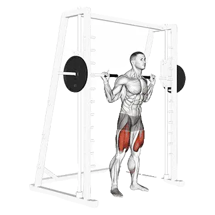

Smith machine squat
Smith machine squat menampilkan berat rata-rata dan standar kekuatan sebagai referensi untuk kategori kaki. Otot utama: Quadriceps, Gluteus maximus.

Berat rata-rata: Menengah
Acuan untuk level menengah.
Pria
120 kg
Wanita
66 kg
Berat rata-rata Smith machine squat [1RM]
| Level | ||
|---|---|---|
| Dasar | 48 kg | 22 kg |
| Pemula | 79 kg | 41 kg |
| Menengah | 120 kg | 66 kg |
| Mahir | 170 kg | 98 kg |
| Pro | 225 kg | 134 kg |
Catatan: standar ini adalah estimasi 1RM berdasarkan lifter rata-rata. Berat badan, usia, dan faktor pribadi lain dapat memengaruhi hasil. Lihat data detail pada tabel di bawah.
Standar kekuatan Smith machine squat (kg)
Pria berdasarkan berat badan (kg) [1RM]
| Berat badan | Dasar | Pemula | Menengah | Mahir | Pro |
|---|---|---|---|---|---|
| 50 | 25 | 46 | 75 | 112 | 153 |
| 55 | 30 | 53 | 84 | 123 | 166 |
| 60 | 36 | 60 | 93 | 134 | 178 |
| 65 | 41 | 67 | 102 | 144 | 190 |
| 70 | 46 | 74 | 110 | 154 | 202 |
| 75 | 52 | 81 | 118 | 163 | 212 |
| 80 | 57 | 87 | 126 | 172 | 223 |
| 85 | 62 | 94 | 134 | 181 | 233 |
| 90 | 67 | 100 | 141 | 189 | 242 |
| 95 | 72 | 106 | 148 | 198 | 252 |
| 100 | 77 | 111 | 155 | 206 | 261 |
| 105 | 81 | 117 | 162 | 213 | 269 |
| 110 | 86 | 123 | 168 | 221 | 278 |
| 115 | 91 | 128 | 174 | 228 | 286 |
| 120 | 95 | 133 | 181 | 235 | 294 |
| 125 | 99 | 139 | 187 | 242 | 301 |
| 130 | 104 | 144 | 193 | 249 | 309 |
| 135 | 108 | 149 | 198 | 255 | 316 |
| 140 | 112 | 153 | 204 | 261 | 323 |
Pria berdasarkan usia [1RM]
| Usia | Dasar | Pemula | Menengah | Mahir | Pro |
|---|---|---|---|---|---|
| 15 | 41 | 67 | 102 | 145 | 192 |
| 20 | 47 | 77 | 117 | 165 | 219 |
| 25 | 48 | 79 | 120 | 170 | 225 |
| 30 | 48 | 79 | 120 | 170 | 225 |
| 35 | 48 | 79 | 120 | 170 | 225 |
| 40 | 48 | 79 | 120 | 170 | 225 |
| 45 | 45 | 75 | 114 | 161 | 214 |
| 50 | 43 | 70 | 107 | 151 | 201 |
| 55 | 39 | 65 | 99 | 140 | 185 |
| 60 | 36 | 59 | 90 | 128 | 169 |
| 65 | 32 | 54 | 82 | 115 | 153 |
| 70 | 29 | 48 | 73 | 103 | 137 |
| 75 | 26 | 43 | 65 | 93 | 123 |
| 80 | 23 | 38 | 59 | 83 | 110 |
| 85 | 21 | 35 | 52 | 74 | 98 |
| 90 | 19 | 31 | 47 | 67 | 89 |
Wanita berdasarkan berat badan (kg) [1RM]
| Berat badan | Dasar | Pemula | Menengah | Mahir | Pro |
|---|---|---|---|---|---|
| 40 | 14 | 28 | 50 | 77 | 108 |
| 45 | 16 | 32 | 54 | 82 | 114 |
| 50 | 18 | 35 | 58 | 87 | 120 |
| 55 | 20 | 37 | 61 | 91 | 125 |
| 60 | 22 | 40 | 65 | 95 | 130 |
| 65 | 24 | 43 | 68 | 99 | 134 |
| 70 | 26 | 45 | 71 | 103 | 138 |
| 75 | 27 | 47 | 74 | 106 | 142 |
| 80 | 29 | 49 | 76 | 109 | 146 |
| 85 | 31 | 52 | 79 | 113 | 150 |
| 90 | 32 | 54 | 82 | 115 | 153 |
| 95 | 34 | 56 | 84 | 118 | 157 |
| 100 | 35 | 57 | 86 | 121 | 160 |
| 105 | 37 | 59 | 89 | 124 | 163 |
| 110 | 38 | 61 | 91 | 126 | 166 |
| 115 | 40 | 63 | 93 | 129 | 169 |
| 120 | 41 | 64 | 95 | 131 | 171 |
Wanita berdasarkan usia [1RM]
| Usia | Dasar | Pemula | Menengah | Mahir | Pro |
|---|---|---|---|---|---|
| 15 | 19 | 35 | 56 | 83 | 114 |
| 20 | 21 | 40 | 65 | 95 | 131 |
| 25 | 22 | 41 | 66 | 98 | 134 |
| 30 | 22 | 41 | 66 | 98 | 134 |
| 35 | 22 | 41 | 66 | 98 | 134 |
| 40 | 22 | 41 | 66 | 98 | 134 |
| 45 | 21 | 39 | 63 | 93 | 127 |
| 50 | 20 | 36 | 59 | 87 | 119 |
| 55 | 18 | 33 | 55 | 81 | 110 |
| 60 | 17 | 31 | 50 | 74 | 101 |
| 65 | 15 | 28 | 45 | 67 | 91 |
| 70 | 13 | 25 | 40 | 60 | 82 |
| 75 | 12 | 22 | 36 | 53 | 73 |
| 80 | 11 | 20 | 32 | 48 | 65 |
| 85 | 10 | 18 | 29 | 43 | 59 |
| 90 | 9 | 16 | 26 | 39 | 53 |
Catatan: beban yang tertera pada machine dan cable dapat berbeda menurut merek dan mekanisme alat. Gunakan sebagai referensi untuk kondisi alat yang sebanding.
Catat dan analisis di aplikasi Shiba
Lihat beban, repetisi, dan perkembangan di satu tempat.
Cara membaca tabel
| Level | Deskripsi | Distribusi |
|---|---|---|
| Dasar | Menguasai teknik yang benar dan berlatih konsisten minimal 1 bulan. | Bawah 5% |
| Pemula | Berlatih konsisten minimal 6 bulan. | Atas 80% |
| Menengah | Berlatih konsisten lebih dari 2 tahun. | Atas 50% |
| Mahir | Berlatih terencana lebih dari 5 tahun. | Atas 20% |
| Pro | Menekuni latihan ini secara khusus lebih dari 5 tahun. | Atas 5% |